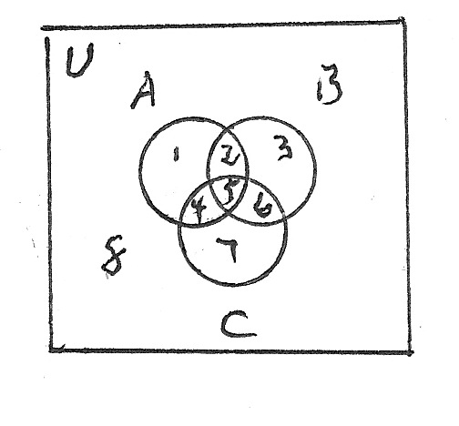
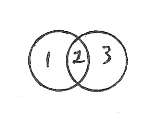

2) x ∈ A ∧ x ∈ B → x ∈ A, from 1) by substitution
3) x ∈ ( A ∩ B ) → x ∈ A, from 2) by definition of intersection
4) A ∩ B ⊆ A, from 3) by definition of subset
2) x ∈ A → x ∈ A ∨ x ∈ B, from 1), by substitution
3) x ∈ A → x ∈ ( A ∪ B ) from 2), by definition of union
4) A ⊆ A ∪ B, from 3), by definition of subset
2) x ∈ A ∧ x ∉ B → x ∈ A, from 1), by substitution
3) x ∈ ( A - B ) → x ∈ A, from 2), by definition of intersection
4) A - B ⊆ A, from 3), by definition of subset
i) 1) p ∧ ( q ∧ ¬p ) → r, a tautology (you should verify that this is a tautology!)
2) x ∈ A ∧ ( x ∈ B ∧ x ∉ A ) → x ∈ ∅, from 1), by substitution
3) x ∈ (A ∩ ( A - B )) → x ∈ ∅, from 2), by definition of intersection and difference
4) A ∩ ( B - A ) ⊆ ∅, from 3), by definition of subset
ii) 1) x ∈ ∅ → x ∈ ( A ∩ ( B - A ) ) is trivally true because the null set is a subset of all sets
2) ∅ ⊆ ( A ∩ ( B - A ) )
1) p ∧ T ↔ p is a tautology
2) ( x ∈ A ∨ x ∈ B ) ∧ ( x ∈ A ∨ x ∉ A ) ↔ x ∈ A ∨ x ∈ B, from 1) by substitution
3) x ∈ A ∨ ( x ∈ B ∧ x ∉ A ) ↔ x ∈ A ∨ x ∈ B, from 2) by distribution of or over and on the left side of the biconditional
4) x ∈ ( A ∪ ( B - A )) ↔ x ∈ ( A ∪ B ), from 3), by definition of union and difference
5) A ∪ ( B - A ) = A ∪ B, from 4), by definition of equality

